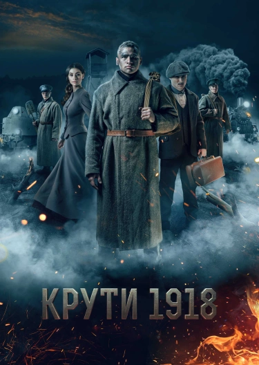
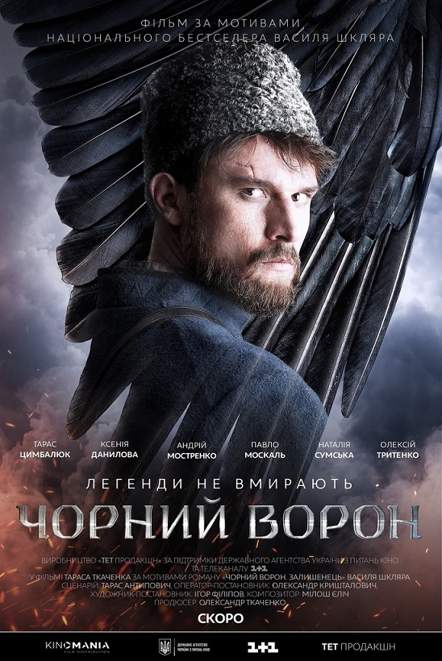
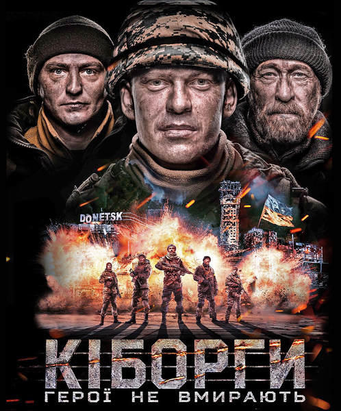
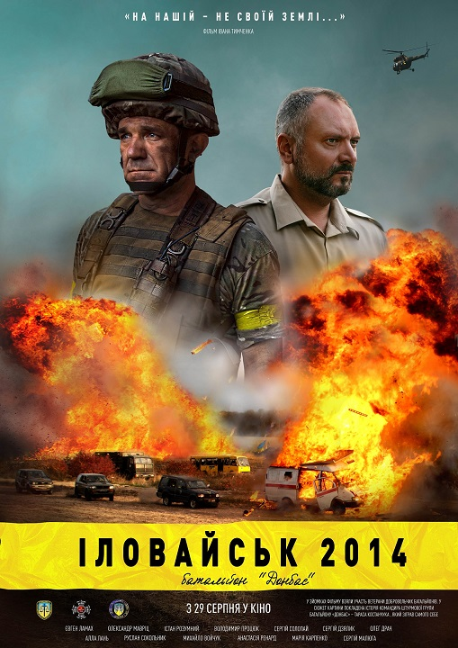

Проти орд та імперій.
Фільми про героїв, які боролися за незалежну Україну
Український народ боровся за незалежність більше, аніж 29 років. Хоробрі воїни захищали українські землі ціною власного життя. Спогади про ці події ніколи не зникнуть з народної пам’яті. Сучасні режисери за останні роки створили низку стрічок, де показали історичні події на території України й сміливців, які не побоялися піти проти ворогів. Ці стрічки дійсно спонукають пишатися українцями.
Крути 1918
В основу фільму покладена реальна історія бою на залізничній станції Крути у 1918 році. Тоді у нерівному бою зіштовхнулися чотирьохтисячний підрозділ російської червоної армії та лише невеликий загін київських курсантів. Доля молодих хлопців могла б скластися по іншому, але вони стали на захист української землі. Хоч фільм й отримав серйозну критику, але він вартий уваги через живу українську мову, яскраві батальні сцени, реальну зброю початку XX століття та саундтрек, який хапає за душу.
Чорний ворон
Фільм про повстанців, які боролися проти окупаційної радянської влади. Цей період в історії України довго замовчували, але творці стрічки вирішили показати все так, як дійсно відбувалося. Головний герой на прізвисько «Чорний ворон» – ватажок загону, який не боїться виступати проти червоних.
Кіборги. Герої не вмирають
Складний, але обов’язковий для перегляду фільм, який відкриє історію подій у Донецькому аеропорту під час війни на Донбасі. Допомагали створювати цей проєкт військові, які були присутні на місці подій: Кирило Недря («Доцент»), Шараскін Андрій («Богема»), Євген Жуков («Маршал») та Євген Межевікін («Адам»). Головні герої стрічки – це збірні образи українських добровольців, які борються за Східну Україну. Їхні бажання йдуть на другий план, коли потрібно захищати Батьківщину.
Іловайськ 2014. Батальйон Донбас
Фільм отримав змішані відгуки щодо сюжету та гри акторів, проте деякі критики хвалили його за вихід за межі загальної думки про події під Іловайськом. У центрі стрічки поранений у бою командир штурмової групи Донбас, який дивом залишився живим після обстрілів. Його розшукує російський офіцер, який жадає помсти. Заради реалістичності у зображенні подій, до зйомок були залучені експерти та добровольці, які були в Іловайську під час боїв. Бійці батальйону «Донбас» спонсорували проєкт та впродовж 4 місяців вчили акторів поводитися зі зброєю, аби уникнути «штучної» атмосфери у кадрі.
